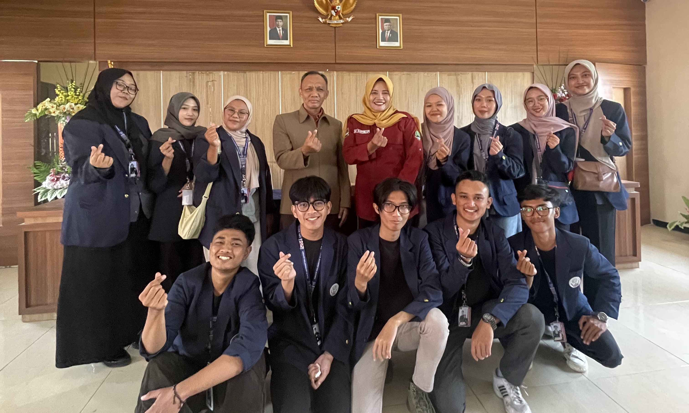

Kuliah Kerja Nyata - SISDAMAS
Desa Pakuhaji Kecamatan Ngamprah

Desa Lebakwangi merupakan salah satu Desa Induk dan gerbang permukaan sebelah Barat wilayah Kecamatan Arjasari.
Desa Lebakwangi merupakan salah satu Desa yang sebelumnya termasuk dalam wilayah Kecamatan Pameungpeuk yang
kemudian dimekarkan pada tahun 1992 menjadi Kecamatan Arjasari berdasarkan PP Nomor 44 tanggal 10 - 10 - 1992
tentang Pembentukan 27 Kecamatan Wilayah Kabupaten DT II Bandung.
Pada perjalanan Pemerintahan, Desa Lebakwangi telah mengalami perubahan atau pergeseran dari yang semula merupakan
wilayah Desa yang sepenuhnya pertanian, menjadi daerah yang dipergunakan oleh bangunan-bangunan industri.
Demikian pula, dibangunnya 7 (tujuh) lokasi pemukiman perumahan di desa ini menyebabkan percampuran penduduk
yang berasal dari berbagai wilayah di Indonesia. Hal ini menjadikan Desa Lebakwangi sebagai salah satu desa
yang paling padat penduduknya di Kecamatan Arjasari saat ini, sekaligus menandai perkembangan potensi Sumber
Daya Manusia yang membanggakan.
Desa Lebakwangi juga memiliki beberapa tempat bersejarah, salah satunya adalah Situs Gunung Anday yang terletak
di tengah-tengah desa. Situs ini melintang dari Barat ke Timur, sebelah Utara Kantor Desa, di lintasan jalan
Terusan Lebakwangi - Langonsari, tepatnya di RT 04 RW 03. Luas Situs Gunung Anday sekitar 4,8 Ha, di mana bagian
atas (puncaknya) merupakan Situs bersejarah, sementara bagian bawah adalah Tanah Milik Warga yang digunakan
sebagai lahan pertanian.
Beberapa nilai kesejarahan yang terkandung dalam Situs Gunung Anday antara lain sebagai tempat (maqom / Patilasan)
para pendahulu atau Luluhur masyarakat Desa Lebakwangi. Di dalamnya terdapat 5 (lima) makam yang termasyhur,
seperti Maqom Sembah Dalem Andaya Sakti, Mbah Aji Kalangsumitra, Mbah Patradikusumah, Mbah Wirasutadikusumah,
dan Mbah Lurah Sutandikusumah.
Pengelolaan Situs Gunung Anday dilaksanakan oleh kedua Desa, yaitu Lebakwangi dan Batukarut. Pada waktu-waktu
tertentu, masyarakat dari kedua Desa terbiasa melaksanakan kegiatan kebersihan di lokasi jalan dan Maqom.
Situs Gunung Anday juga memiliki kaitan dengan dua tempat bersejarah lainnya, yaitu Bumi Alit Kabuyutan di
Desa Batukarut dan Makam Sembah Dalem Buni Sakti di Desa Wargaluyu.
Sebagai upaya melestarikan nilai-nilai sejarah yang terkandung di dalamnya, pada tahun 2012, Situs Gunung
Anday ditata kembali oleh Dinas Kepurbakalaan Provinsi Jawa Barat. Hal ini menjadi langkah penting untuk
menghargai jasa para pendahulu dan merawat warisan budaya yang merupakan bagian tak terpisahkan dari identitas
masyarakat Desa Lebakwangi. Selain menjadi saksi bisu perjalanan sejarah, Situs Gunung Anday juga menjadi
destinasi menarik bagi para wisatawan dan pengunjung yang ingin mengenal dan memahami lebih dalam tentang
sejarah dan budaya khas daerah ini. Dengan perawatan dan apresiasi yang tepat, harapan akan terus hidup dan
dikenang oleh generasi-generasi mendatang.